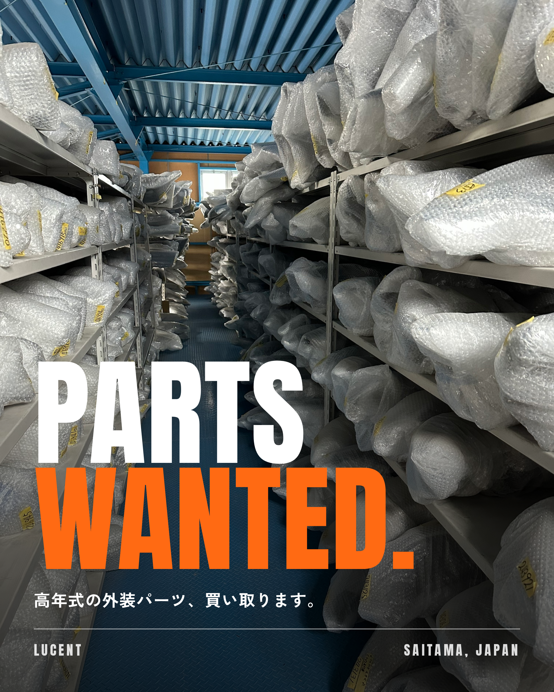

BEHIND THE POST
01 / 05
AIに書かせた
買取告知、
最後は
自分で
直した。
部品屋20年、本業の告知の裏側
@LINE_AI_OFFICE
SWIPE
BEHIND THE POST
02 / 05
頼んだこと
連休明けに、鈑金屋さんへ
「買取やってます」を
思い出してもらう告知
ライター
→
SNS担当・アナリスト
書いて、校閲して、仕上げるところまで
書いたのは、うちのAI社員
@LINE_AI_OFFICE
LUCENT / SAITAMA
BEHIND THE POST
03 / 05
現場を知らない言葉が、
出てきた。
AI DRAFT
外し取り・余剰在庫・処分予定でも
→ 鈑金屋に余剰在庫は無い
AI DRAFT
割れていても直して使えるものがあります
→ 何でも買うと思われる
AI DRAFT
捨てる前に声かけてください
→ 取りに行くのは、こっち
@LINE_AI_OFFICE
RED PEN BY TATSU
BEHIND THE POST
04 / 05
直して出したのが、これ。

9/23
本業のインスタに
出した告知
@LINE_AI_OFFICE
LUCENT / SAITAMA
BEHIND THE POST
05 / 05
下書きと型は、AI。
現場の言葉は、
人。
直した言葉は記録して、次から書かせない。
AI社員を作るとき
「会社情報ファイル」
に
書き込んでおくのが、この部分です。
→ プロフィールのリンクから
@LINE_AI_OFFICE
AI OFFICE